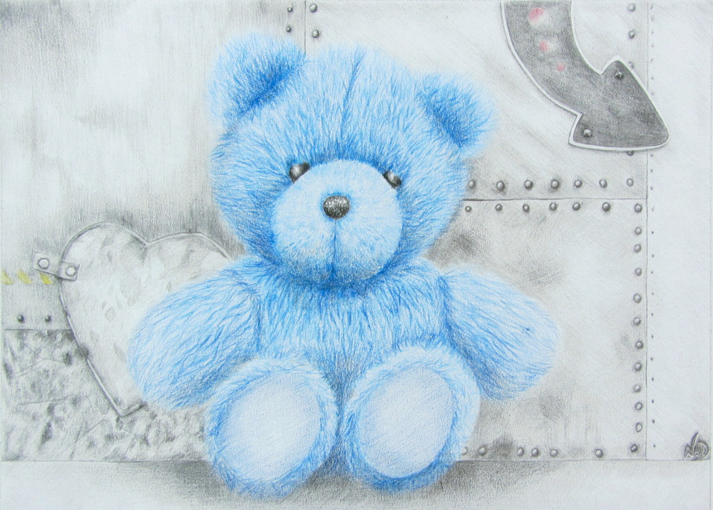
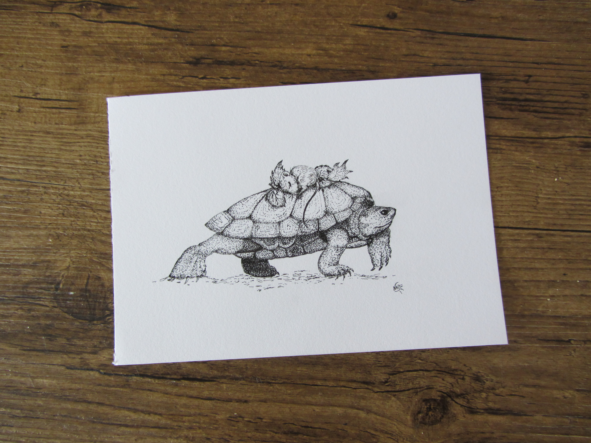
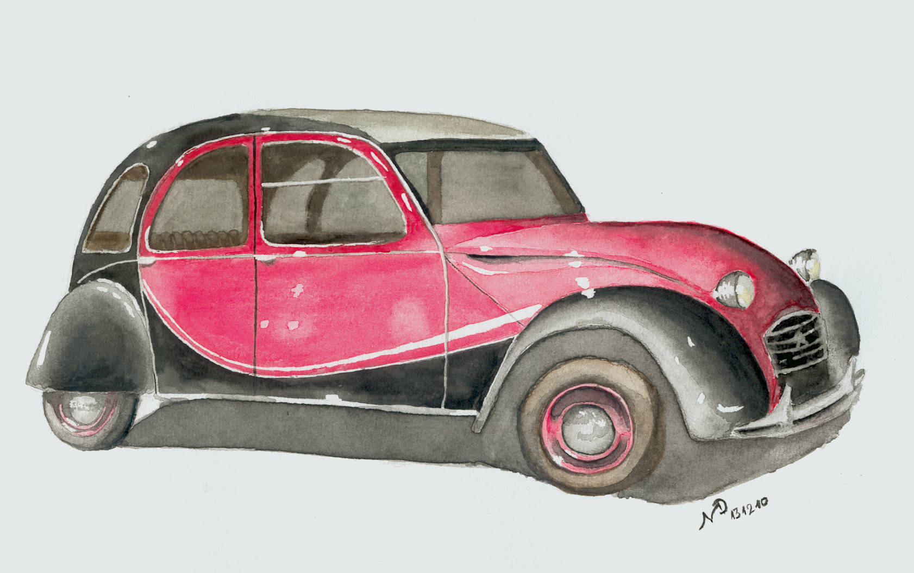

Journal d'une dessinatrice
par NAD-Dessine
Moi et le dessin, c'est une longue histoire,une fascination omniprésente, qu'il m'arrivait parfois de laisser de côté,de ne plus pratiquer. Mais, il est toujours revenu.
Crayon graphite, de couleur, l'aquarelle, les encres mais aussi la gravure et le digital: voilà mes terrains d'exploration.


